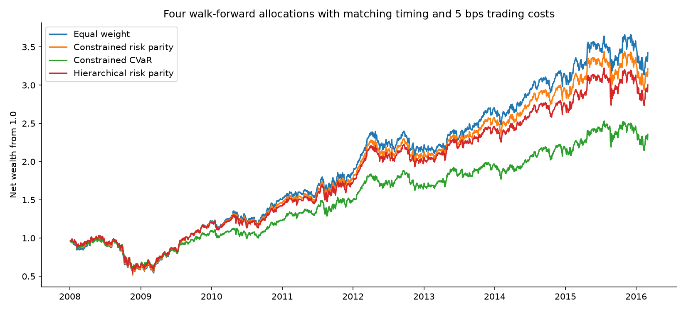

2007-01-04 to 2016-03-01 · 2305 observations · 99% VaR
Measured research results. Cross-asset validation is synthetic; public sample is historical equities only.
| Model | Exceptions | Rate | Coverage p | Quantile loss |
|---|---|---|---|---|
| historical | 25 | 1.22% | 0.3377 | 0.000512 |
| parametric | 45 | 2.19% | 2.747e-06 | 0.000514 |
| monte_carlo | 48 | 2.34% | 2.07e-07 | 0.000521 |
| filtered_historical | 30 | 1.46% | 0.04937 | 0.000440 |
| block_bootstrap | 27 | 1.32% | 0.171 | 0.000512 |
| student_t | 21 | 1.02% | 0.9173 | 0.000496 |
Lower quantile loss is preferable on this shared sample. Coverage non-rejection does not establish correctness. No model is selected using these test results.

{
"ES attribution": {
"expected_shortfall": 0.04070680578204484,
"asset_contributions": [
0.011167470033194729,
0.00783542819637875,
0.0099142326062336,
0.011789674946237757
],
"reconciliation_error": 0.0
},
"reverse stress": {
"loss_target": 0.1,
"asset_shocks": [
-0.11584266708520659,
-0.0807912137392637,
-0.0945978575982012,
-0.1087682615773286
],
"portfolio_loss": 0.10000000000000003,
"mahalanobis_distance": 7.685937470486595,
"interpretation": "Covariance-distance severity, not a calibrated event probability."
}
}
See summary.json and enhancements.json for costs, constraints, full strategy results and uncertainty.